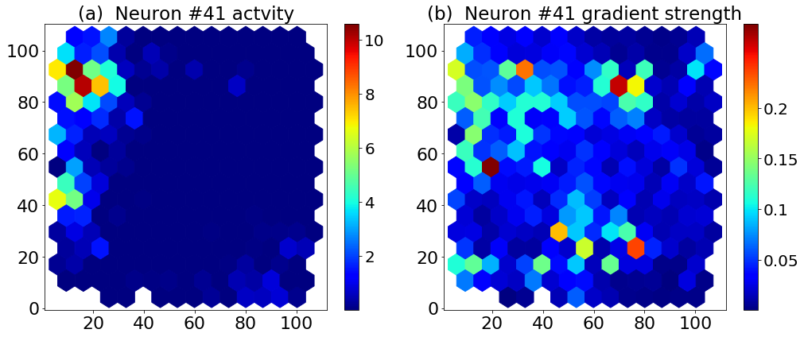
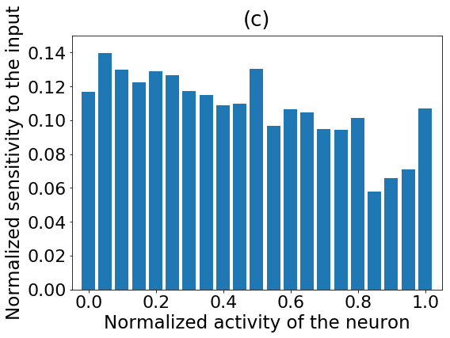

---
redirect_from:
  - "/03/subsection/02-04-05/sos-notebook6"
interact_link: content/03/subsection/02-04-05/sos_notebook6.ipynb
kernel_name: sos
kernel_path: content/03/subsection/02-04-05
has_widgets: false
title: |-
  Fig 6. Gradient analysis, Sensitivity decreases with activity
pagenum: 9
prev_page:
  url: /03/subsection/02-04-05/sos_notebook5.html
next_page:
  url: 
suffix: .ipynb
search: python plotly figure neuron figures calculations b sensitivity c activity example github sos interactive author written com normalized code jupyter notebook script scripts vatlab io docs workflow reproduces paper ardi tampuu last raul vicente using fetched repo neurocsut ratgps ploting library place field fieldabsolute values gradients different locations same function across neurons doi org journal pcbi g matplotlib gradient strength

comment: "***PROGRAMMATICALLY GENERATED, DO NOT EDIT. SEE ORIGINAL FILES IN /content***"
---

    <main class="jupyter-page">
    <div id="page-info"><div id="page-title">Fig 6. Gradient analysis, Sensitivity decreases with activity</div>
</div>
    <div class="jb_cell">

<div class="cell border-box-sizing text_cell rendered"><div class="inner_cell">
<div class="text_cell_render border-box-sizing rendered_html">
<hr>
<p>This code example is a Jupyter notebook with <a href="https://vatlab.github.io/sos-docs/">Script of Scripts</a> (SoS) workflow. It reproduces interactive figures for the paper by first author <strong>Ardi Tampuu</strong> and last author <strong>Raul Vicente</strong>.</p>
<p>The calculations are written using <em>Python 2.7</em> (from this fetched from <a href="https://github.com/NeuroCSUT/RatGPS">repo</a>), and the interactive figures are written in <em>Python 3.6</em> with the ploting library <a href="https://plotly.com/">Plotly</a>.</p>

</div>
</div>
</div>
</div>

<div class="jb_cell">

<div class="cell border-box-sizing text_cell rendered"><div class="inner_cell">
<div class="text_cell_render border-box-sizing rendered_html">
<h1 id="Figure-6:">Figure 6:<a class="anchor-link" href="#Figure-6:"> </a></h1><p><strong>(a)</strong> Place field of an example neuron. <strong>(b)</strong> Sensitivity field—absolute values of gradients in different locations for the same neuron. <strong>(c)</strong> Normalized sensitivity as a function of normalized activity across neurons.</p>
<p><a href="https://doi.org/10.1371/journal.pcbi.1006822.g006">https://doi.org/10.1371/journal.pcbi.1006822.g006</a></p>

</div>
</div>
</div>
</div>

<div class="jb_cell">

<div class="cell border-box-sizing text_cell rendered"><div class="inner_cell">
<div class="text_cell_render border-box-sizing rendered_html">
<h2 id="Python-2.7">Python 2.7<a class="anchor-link" href="#Python-2.7"> </a></h2><hr>
<p>Figure with calculations in Python 2.7 Matplotlib:</p>

</div>
</div>
</div>
</div>

<div class="jb_cell">

<div class="cell border-box-sizing code_cell rendered">
<div class="input">

<div class="inner_cell">
    <div class="input_area">
<div class=" highlight hl-sos"><pre><span></span>%use Python2
import numpy as np
import matplotlib.pyplot as plt
%matplotlib inline
import matplotlib.style
import matplotlib as mpl
# mpl.style.use(&#39;classic&#39;)
from ratdata import load_data
from scipy.stats import binned_statistic


X, y = load_data(&#39;data/R2192_1x1400_at35_step200_bin100-RAW_feat.dat&#39;, &#39;data/R2192_1x1400_at35_step200_bin100-RAW_pos.dat&#39;)
data = np.load(&#39;R2192_models/grads_R2192_1x1400_v1.npz&#39;)
#grads = data[&#39;grads&#39;][:,:,:63]
grads = data[&#39;grads&#39;][:,:,:63]
#onehot_grads = data[&#39;grads&#39;][:,:,63:]
targets = data[&#39;targets&#39;]

new_tgts=0
all_grads=[]
# For the article, this was actually done for 10 CV-runs, 
# but to limit repo size we have included only one set of grad to the repository
for i in range(1,2):
    data = np.load(&quot;R2192_models/grads_R2192_1x1400_v&quot;+str(i)+&quot;.npz&quot;)
    grads = data[&#39;grads&#39;][:,:,:63]
    if i&gt;1:
        assert(np.all(new_tgts==data[&quot;targets&quot;]))
    new_tgts = data[&quot;targets&quot;]
    all_grads.append(grads)

raw_mean_grads = np.mean(all_grads, axis=0)

mean_grads = np.mean(np.abs(all_grads), axis=0)

neuron_grads = np.mean(mean_grads, axis=(0,1))

# activity of the most sensitive neurons
plt.figure(figsize=(17,24))

grad_avg_over_time=np.mean(mean_grads[:,97:,:], axis=1)
used_data = []
for i in range(len(y)):
    if y[i,:].tolist() in targets.tolist():
        used_data.append(X[i,:])
    else:
        pass
used_data=np.array(used_data)

feature_importance = neuron_grads
feature_importance = 100.0 * (feature_importance / feature_importance.max())
sorted_idx = np.argsort(feature_importance)
pos = np.arange(sorted_idx.shape[0]) + .5


plt.figure(figsize=(14.3,6))
for i in [2]:
    plt.subplot(1,2,2)
    collection_grad = plt.hexbin(targets[...,0], targets[...,1], grad_avg_over_time[...,sorted_idx[-i]], gridsize = 15, cmap=&#39;jet&#39;)
    #plt.hexbin(targets[...,0], targets[...,1], mean_grads[...,99,sorted_idx[-i]], gridsize = 10)
    cbar = plt.colorbar(ticks=[0.05,0.1,0.15,0.2])
    cbar.ax.set_yticklabels([0.05,0.1,0.15,0.2],fontsize=20)
    plt.xticks(fontsize=22)
    plt.yticks(fontsize=22)
    plt.title(&quot;(b)  Neuron #%d gradient strength&quot; % sorted_idx[-i], fontsize=23)

    plt.subplot(1,2,1)
    collection_loc = plt.hexbin(targets[...,0], targets[...,1], used_data[...,sorted_idx[-i]], gridsize = 15, cmap=&#39;jet&#39;)
    #plt.hexbin(targets[...,0], targets[...,1], mean_grads[...,99,sorted_idx[-i]], gridsize = 10)
    cbar = plt.colorbar( ticks=[2,4,6,8,10])
    cbar.ax.set_yticklabels([2,4,6,8,10],fontsize=20)
    plt.xticks(fontsize=22)
    plt.yticks(fontsize=22)

    plt.title(&quot;(a)  Neuron #%d actvity&quot; % sorted_idx[-i],fontsize=23)
    
    
    ll= collection_loc.get_array()
    gg= collection_grad.get_array()
    

    max_activity= np.max(X[...,sorted_idx[-i]])
    filtered_activity = X[...,sorted_idx[-i]].copy()
    filtered_activity[np.where(filtered_activity&lt;2)]=0
    
plt.tight_layout()
plt.show()
</pre></div>

    </div>
</div>
</div>

<div class="output_wrapper">
<div class="output">

<div class="jb_output_wrapper }}">
<div class="output_area">

<div class="output_subarea output_stream output_stdout output_text">
<pre>Original data: (5404, 63) (5404, 2)
minX/maxX/meanX/stdX/miny/maxy: 0.0 59.0 0.7402482581979251 2.3591926816354136 4.39033 107.044
</pre>
</div>
</div>
</div>
<div class="jb_output_wrapper }}">
<div class="output_area">


<div class="output_text output_subarea ">
<pre>&lt;Figure size 1224x1728 with 0 Axes&gt;</pre>
</div>

</div>
</div>
<div class="jb_output_wrapper }}">
<div class="output_area">


<div class="output_png output_subarea ">

</div>

</div>
</div>
</div>
</div>

</div>
</div>

<div class="jb_cell">

<div class="cell border-box-sizing code_cell rendered">
<div class="input">

<div class="inner_cell">
    <div class="input_area">
<div class=" highlight hl-sos"><pre><span></span>%use Python2
import numpy as np
import matplotlib.pyplot as plt
%matplotlib inline
import matplotlib.style
import matplotlib as mpl
# mpl.style.use(&#39;classic&#39;)
from ratdata import load_data
from scipy.stats import binned_statistic

# These are the &quot;Tableau 20&quot; colors as RGB.    
tableau20 = [(31, 119, 180), (174, 199, 232), (255, 127, 14), (255, 187, 120),    
             (44, 160, 44), (152, 223, 138), (214, 39, 40), (255, 152, 150),    
             (148, 103, 189), (197, 176, 213), (140, 86, 75), (196, 156, 148),    
             (227, 119, 194), (247, 182, 210), (127, 127, 127), (199, 199, 199),    
             (188, 189, 34), (219, 219, 141), (23, 190, 207), (158, 218, 229)]    
  
# Scale the RGB values to the [0, 1] range, which is the format matplotlib accepts.    
for i in range(len(tableau20)):    
    r, g, b = tableau20[i]    
    tableau20[i] = (r / 255., g / 255., b / 255.) 

# activity of the most sensitive neurons
plt.figure(figsize=(14,275))

grad_avg_over_time=np.mean(mean_grads[:,95:,:], axis=1)
#grad_avg_over_time=mean_grads[:,99,:]

used_data = []
for i in range(len(y)):
    if y[i,:].tolist() in targets.tolist():
        used_data.append(X[i,:])
    else:
        pass
used_data=np.array(used_data)

normalized_activity=np.empty_like(used_data)
normalized_grad=np.empty_like(grad_avg_over_time)

activity_hexes=[]
grad_hexes = []

for i in xrange(63):
    #plt.subplot(63,3,i*3+2)
    collection_grad = plt.hexbin(targets[...,0], targets[...,1], grad_avg_over_time[...,i], gridsize = 10)
    #plt.colorbar()
    #plt.title(&quot;Neuron #%d gradient field&quot; % i)

    #plt.subplot(63,3,i*3+1)
    collection_loc = plt.hexbin(targets[...,0], targets[...,1], used_data[...,i], gridsize = 10)
    #plt.colorbar()
    #plt.title(&quot;Neuron #%d place field&quot; % i)
    
    ll= collection_loc.get_array()
    gg= collection_grad.get_array()
    
    activity_hexes.append(ll/np.percentile(ll,99))
    grad_hexes.append(gg/np.percentile(gg,99))
    
    #print &quot;axtivity max, 99th percentile  &quot;, np.max(ll), np.percentile(ll,99)
    #print &quot;grad max, 99th percentile  &quot;, np.max(gg), np.percentile(gg,99)
    normalized_activity[...,i] = used_data[...,i]/np.percentile(used_data[...,i],99)
    #print &quot;axtivity max, 99th percentile  &quot;, np.max(used_data[...,i]), np.percentile(used_data[...,i],99)
    normalized_grad[...,i] = grad_avg_over_time[...,i]/np.percentile(grad_avg_over_time[...,i],99)


    #plt.subplot(63,3,i*3+3)
    #averages,edges,ids = binned_statistic(used_data[...,i]/np.max(used_data[...,i]),grad_avg_over_time[...,i],statistic=&#39;mean&#39;, bins=np.arange(0.0,1,0.1))
    #plt.bar(edges[:-1],averages,width=0.05)
plt.clf()


plt.figure(figsize=(8,6))
averages,edges,ids = binned_statistic(np.ravel(normalized_activity[...,:]),np.ravel(normalized_grad[...,:]),statistic=&#39;mean&#39;, bins=np.arange(-0.001,1.05,0.05))
plt.bar(edges[:-1],averages,width=0.04,align=&#39;center&#39;, color = tableau20[0])
plt.title(&quot;ALL cells, both activity and grads normalized by 99th percentile. &quot;)
plt.xlabel(&quot;Normalized activity of the neuron&quot;, fontsize=23)
plt.ylabel(&quot;Normalized sensitivity to the input&quot;, fontsize=23)
plt.title(&quot;(c)&quot;,fontsize=26,y=1.02)
plt.xticks(fontsize=22)
plt.yticks(fontsize=22)
plt.xlim([-0.05,1.05])
plt.ylim([-0.0,0.15])
plt.tight_layout()
plt.show()
#plt.savefig(&quot;grad_f_activity.png&quot;)
</pre></div>

    </div>
</div>
</div>

<div class="output_wrapper">
<div class="output">

<div class="jb_output_wrapper }}">
<div class="output_area">


<div class="output_text output_subarea ">
<pre>&lt;Figure size 1008x19800 with 0 Axes&gt;</pre>
</div>

</div>
</div>
<div class="jb_output_wrapper }}">
<div class="output_area">


<div class="output_png output_subarea ">

</div>

</div>
</div>
</div>
</div>

</div>
</div>

<div class="jb_cell">

<div class="cell border-box-sizing text_cell rendered"><div class="inner_cell">
<div class="text_cell_render border-box-sizing rendered_html">
<h2 id="Python-3.7">Python 3.7<a class="anchor-link" href="#Python-3.7"> </a></h2><hr>
<p>Figures with calculations in Python 3.7:</p>

</div>
</div>
</div>
</div>

<div class="jb_cell">

<div class="cell border-box-sizing text_cell rendered"><div class="inner_cell">
<div class="text_cell_render border-box-sizing rendered_html">
<h3 id="(a)-Neuron-#41-activity">(a) Neuron #41 activity<a class="anchor-link" href="#(a)-Neuron-#41-activity"> </a></h3><p>Figure 6.a, Plotly</p>

</div>
</div>
</div>
</div>

<div class="jb_cell">

<div class="cell border-box-sizing text_cell rendered"><div class="inner_cell">
<div class="text_cell_render border-box-sizing rendered_html">
<h3 id="(b)-Neuron-#41-gradient-strength">(b) Neuron #41 gradient strength<a class="anchor-link" href="#(b)-Neuron-#41-gradient-strength"> </a></h3><p>Figure 6.b, Plotly</p>

</div>
</div>
</div>
</div>

<div class="jb_cell">

<div class="cell border-box-sizing text_cell rendered"><div class="inner_cell">
<div class="text_cell_render border-box-sizing rendered_html">
<h3 id="(c)-Sensitivity-/-Activity-on-neuron">(c) Sensitivity / Activity on neuron<a class="anchor-link" href="#(c)-Sensitivity-/-Activity-on-neuron"> </a></h3><p>Figure 6.c, Plotly</p>

</div>
</div>
</div>
</div>

 


    </main>
    